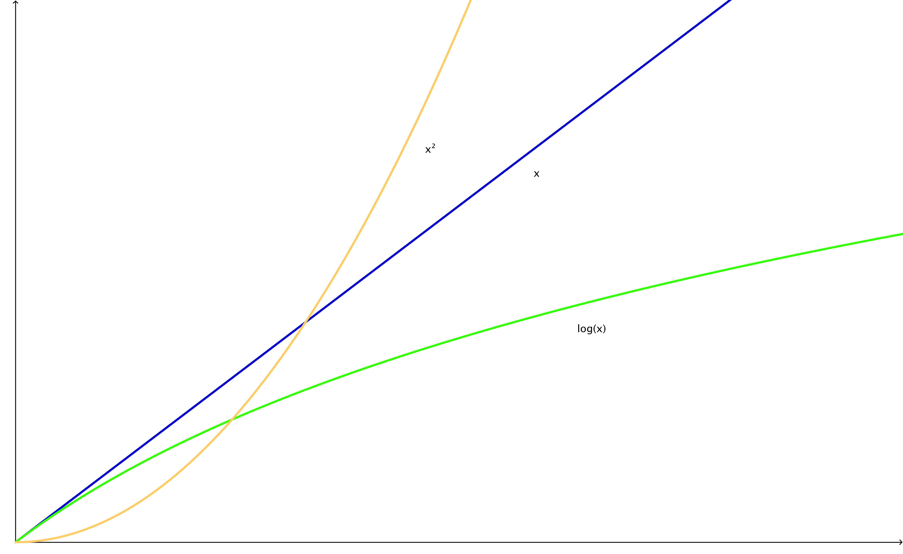

Regarding Coding
í

Think about an algorithm that counts the number of characters in a string. The complexity is O(n), because it needs to iterate over every character to come up with the number of characters. If you'd already have the number of characters stored in a variable beforehand, the complexity would be constant at a level of 1 -> O(1), because it would take the algorithm only one step to look up the number of characters, no matter how many there are in the string.
An example for a logarithmic behavior would be the binary search algorithm. It works like this: Let's say we have an ordered list of numbers, [1,2,5,6,8,9,11]. We tell the algorithm to look for the number 2.
It will divide the list into two piles: [1,2,5],6,[8,9,11]. Is 6 the number we're looking for? No, but we know that 2 is smaller than 6, so we can ignore the pile to right from now on: [1,2,5].
Now it divides the list into two piles again: [1],2,[5]. It looks in the middle again, and it finds the number 2! The algorithm ends now after two divisions in total.
This was the worst case scenario, because the 2 could have been in the middle of the list right from the beginning. Then it would have been zero divisions to find the number (best case scenario). You can calculate the worst case scenario number using this formula: ⌊log,base2 (x)⌋. So in this case it would be ⌊log,base2 (7)⌋ = ⌊2.807⌋ = 2. So to find a number in the list you would need two divisions at maximum.
The "O" is used for describing the worst case complexity, which is O(⌊log,base2 (x)⌋) in this case. For best case scenario we use "omega", so it's Ω(1) in this case.
An example for a logarithmic behavior would be the binary search algorithm. It works like this: Let's say we have an ordered list of numbers, [1,2,5,6,8,9,11]. We tell the algorithm to look for the number 2.
It will divide the list into two piles: [1,2,5],6,[8,9,11]. Is 6 the number we're looking for? No, but we know that 2 is smaller than 6, so we can ignore the pile to right from now on: [1,2,5].
Now it divides the list into two piles again: [1],2,[5]. It looks in the middle again, and it finds the number 2! The algorithm ends now after two divisions in total.
This was the worst case scenario, because the 2 could have been in the middle of the list right from the beginning. Then it would have been zero divisions to find the number (best case scenario). You can calculate the worst case scenario number using this formula: ⌊log,base2 (x)⌋. So in this case it would be ⌊log,base2 (7)⌋ = ⌊2.807⌋ = 2. So to find a number in the list you would need two divisions at maximum.
The "O" is used for describing the worst case complexity, which is O(⌊log,base2 (x)⌋) in this case. For best case scenario we use "omega", so it's Ω(1) in this case.